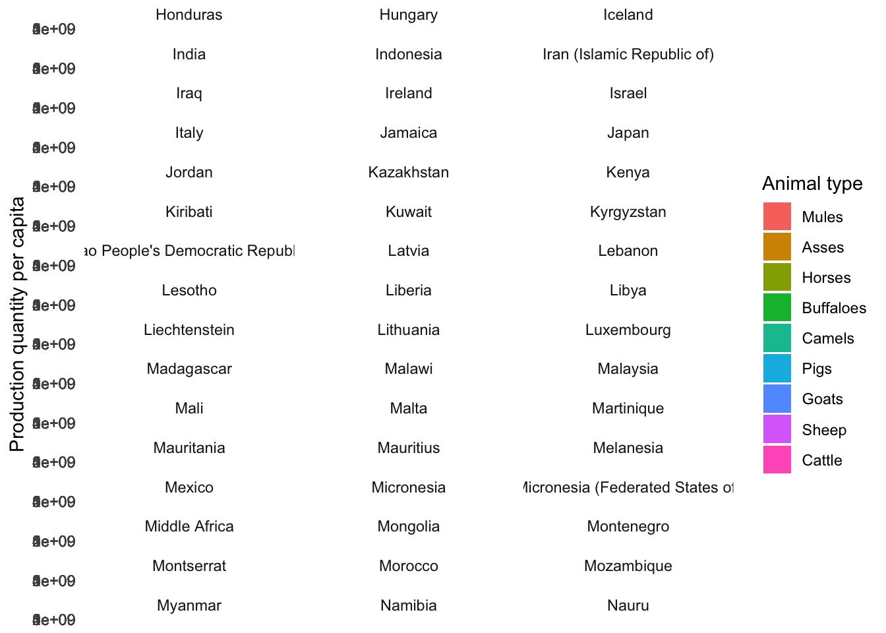
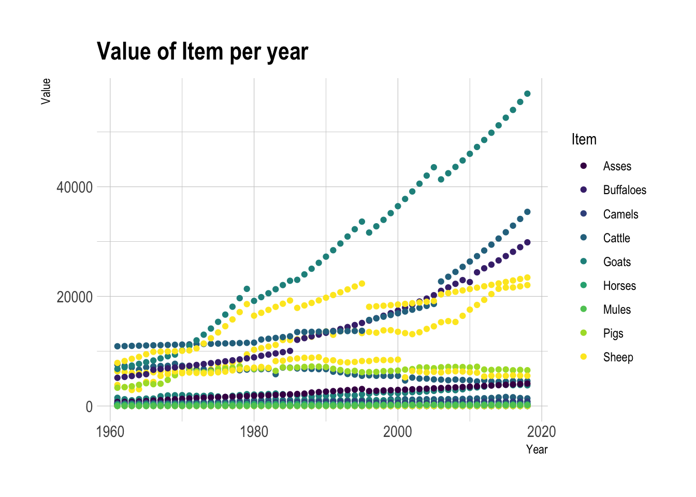

library(tidyverse)
library(lubridate)
library(ggplot2)
knitr::opts_chunk$set(echo = TRUE, warning=FALSE, message=FALSE)Challenge 7 Instructions
true
true
true
Visualizing Multiple Dimensions
Read in data
FAOSTAT_livestock
Briefly describe the data
The FAOSTAT_livestock.csv dataset is a comprehensive source of information on livestock production and trade, sourced from the FAO. The dataset includes data on various types of livestock, including cattle, sheep, goats, pigs, poultry, and other animals. For each type of livestock, the data includes information on production quantities, trade volumes, and population sizes, as well as related indicators such as feed consumption and meat yield.
The data is organized by country and year, with information spanning several decades in some cases. The dataset also includes aggregate data for regions and the world as a whole.
Read data
#Load data
FAOSTAT_livestock <- read.csv("~/Desktop/601_Spring_2023/posts/_data/FAOSTAT_livestock.csv")
head(FAOSTAT_livestock) Domain.Code Domain Area.Code Area Element.Code Element Item.Code
1 QA Live Animals 2 Afghanistan 5111 Stocks 1107
2 QA Live Animals 2 Afghanistan 5111 Stocks 1107
3 QA Live Animals 2 Afghanistan 5111 Stocks 1107
4 QA Live Animals 2 Afghanistan 5111 Stocks 1107
5 QA Live Animals 2 Afghanistan 5111 Stocks 1107
6 QA Live Animals 2 Afghanistan 5111 Stocks 1107
Item Year.Code Year Unit Value Flag Flag.Description
1 Asses 1961 1961 Head 1300000 Official data
2 Asses 1962 1962 Head 851850 Official data
3 Asses 1963 1963 Head 1001112 Official data
4 Asses 1964 1964 Head 1150000 F FAO estimate
5 Asses 1965 1965 Head 1300000 Official data
6 Asses 1966 1966 Head 1200000 Official dataTidy Data (as needed)
# Load the necessary library
library(tidyverse)
# Read in the original dataset
df <- read_csv("~/Desktop/601_Spring_2023/posts/_data/FAOSTAT_livestock.csv")
# Remove rows with missing values
df <- drop_na(df)
# Convert the Value column to numeric
df$Value <- as.numeric(df$Value)
# Remove duplicates
df <- distinct(df)
head(df)# A tibble: 6 × 14
`Domain Code` Domain `Area Code` Area `Element Code` Element `Item Code`
<chr> <chr> <dbl> <chr> <dbl> <chr> <dbl>
1 QA Live Anima… 2 Afgh… 5111 Stocks 1107
2 QA Live Anima… 2 Afgh… 5111 Stocks 1107
3 QA Live Anima… 2 Afgh… 5111 Stocks 1107
4 QA Live Anima… 2 Afgh… 5111 Stocks 1107
5 QA Live Anima… 2 Afgh… 5111 Stocks 1107
6 QA Live Anima… 2 Afgh… 5111 Stocks 1107
# ℹ 7 more variables: Item <chr>, `Year Code` <dbl>, Year <dbl>, Unit <chr>,
# Value <dbl>, Flag <chr>, `Flag Description` <chr>tail(df)# A tibble: 6 × 14
`Domain Code` Domain `Area Code` Area `Element Code` Element `Item Code`
<chr> <chr> <dbl> <chr> <dbl> <chr> <dbl>
1 QA Live Anima… 5504 Poly… 5111 Stocks 976
2 QA Live Anima… 5504 Poly… 5111 Stocks 976
3 QA Live Anima… 5504 Poly… 5111 Stocks 976
4 QA Live Anima… 5504 Poly… 5111 Stocks 976
5 QA Live Anima… 5504 Poly… 5111 Stocks 976
6 QA Live Anima… 5504 Poly… 5111 Stocks 976
# ℹ 7 more variables: Item <chr>, `Year Code` <dbl>, Year <dbl>, Unit <chr>,
# Value <dbl>, Flag <chr>, `Flag Description` <chr>str(df)tibble [42,545 × 14] (S3: tbl_df/tbl/data.frame)
$ Domain Code : chr [1:42545] "QA" "QA" "QA" "QA" ...
$ Domain : chr [1:42545] "Live Animals" "Live Animals" "Live Animals" "Live Animals" ...
$ Area Code : num [1:42545] 2 2 2 2 2 2 2 2 2 2 ...
$ Area : chr [1:42545] "Afghanistan" "Afghanistan" "Afghanistan" "Afghanistan" ...
$ Element Code : num [1:42545] 5111 5111 5111 5111 5111 ...
$ Element : chr [1:42545] "Stocks" "Stocks" "Stocks" "Stocks" ...
$ Item Code : num [1:42545] 1107 1107 1107 1107 1107 ...
$ Item : chr [1:42545] "Asses" "Asses" "Asses" "Asses" ...
$ Year Code : num [1:42545] 1964 1973 1974 1975 1976 ...
$ Year : num [1:42545] 1964 1973 1974 1975 1976 ...
$ Unit : chr [1:42545] "Head" "Head" "Head" "Head" ...
$ Value : num [1:42545] 1150000 1250000 1250000 1250000 1250000 ...
$ Flag : chr [1:42545] "F" "F" "F" "F" ...
$ Flag Description: chr [1:42545] "FAO estimate" "FAO estimate" "FAO estimate" "FAO estimate" ...summary(df) Domain Code Domain Area Code Area
Length:42545 Length:42545 Min. : 1 Length:42545
Class :character Class :character 1st Qu.: 89 Class :character
Mode :character Mode :character Median : 175 Mode :character
Mean :1629
3rd Qu.:5102
Max. :5504
Element Code Element Item Code Item
Min. :5111 Length:42545 Min. : 866 Length:42545
1st Qu.:5111 Class :character 1st Qu.: 976 Class :character
Median :5111 Mode :character Median :1034 Mode :character
Mean :5111 Mean :1033
3rd Qu.:5111 3rd Qu.:1107
Max. :5111 Max. :1126
Year Code Year Unit Value
Min. :1961 Min. :1961 Length:42545 Min. :0.000e+00
1st Qu.:1976 1st Qu.:1976 Class :character 1st Qu.:5.400e+03
Median :1991 Median :1991 Mode :character Median :8.000e+04
Mean :1991 Mean :1991 Mean :1.763e+07
3rd Qu.:2005 3rd Qu.:2005 3rd Qu.:1.849e+06
Max. :2018 Max. :2018 Max. :1.490e+09
Flag Flag Description
Length:42545 Length:42545
Class :character Class :character
Mode :character Mode :character
Summary per Area and year reflecting Min,Meadian,Mean & Max of all the areas.
summary(FAOSTAT_livestock) Domain.Code Domain Area.Code Area
Length:82116 Length:82116 Min. : 1.0 Length:82116
Class :character Class :character 1st Qu.: 73.0 Class :character
Mode :character Mode :character Median : 146.0 Mode :character
Mean : 912.7
3rd Qu.: 221.0
Max. :5504.0
Element.Code Element Item.Code Item
Min. :5111 Length:82116 Min. : 866 Length:82116
1st Qu.:5111 Class :character 1st Qu.: 976 Class :character
Median :5111 Mode :character Median :1034 Mode :character
Mean :5111 Mean :1018
3rd Qu.:5111 3rd Qu.:1096
Max. :5111 Max. :1126
Year.Code Year Unit Value
Min. :1961 Min. :1961 Length:82116 Min. :0.000e+00
1st Qu.:1976 1st Qu.:1976 Class :character 1st Qu.:1.250e+04
Median :1991 Median :1991 Mode :character Median :2.247e+05
Mean :1990 Mean :1990 Mean :1.163e+07
3rd Qu.:2005 3rd Qu.:2005 3rd Qu.:2.377e+06
Max. :2018 Max. :2018 Max. :1.490e+09
NA's :1301
Flag Flag.Description
Length:82116 Length:82116
Class :character Class :character
Mode :character Mode :character
checking the missing values
sum(is.na(FAOSTAT_livestock))[1] 1301#Checking for duplicate values
sum(duplicated(FAOSTAT_livestock))[1] 0Analyzing data set with filter option
library(lubridate)
FAOSTAT_livestock <- FAOSTAT_livestock %>%
filter(Year == 2015)This code reads in the cleaned FAOSTAT_livestock.csv dataset and reorders the data by year, value per capita, country, and item using the arrange() function. The resulting dataset is then saved as a new CSV file named ‘FAOSTAT_livestock_reordered.csv’.
# Load the necessary library
library(tidyverse)
# Read in the cleaned dataset
df <- read_csv("~/Desktop/601_Spring_2023/posts/_data/FAOSTAT_livestock.csv")
# Reorder the data by year, value per capita, country, and item
df_reordered <- df %>%
arrange(Year, Value, Area, Item)
head(df)# A tibble: 6 × 14
`Domain Code` Domain `Area Code` Area `Element Code` Element `Item Code`
<chr> <chr> <dbl> <chr> <dbl> <chr> <dbl>
1 QA Live Anima… 2 Afgh… 5111 Stocks 1107
2 QA Live Anima… 2 Afgh… 5111 Stocks 1107
3 QA Live Anima… 2 Afgh… 5111 Stocks 1107
4 QA Live Anima… 2 Afgh… 5111 Stocks 1107
5 QA Live Anima… 2 Afgh… 5111 Stocks 1107
6 QA Live Anima… 2 Afgh… 5111 Stocks 1107
# ℹ 7 more variables: Item <chr>, `Year Code` <dbl>, Year <dbl>, Unit <chr>,
# Value <dbl>, Flag <chr>, `Flag Description` <chr>tail(df)# A tibble: 6 × 14
`Domain Code` Domain `Area Code` Area `Element Code` Element `Item Code`
<chr> <chr> <dbl> <chr> <dbl> <chr> <dbl>
1 QA Live Anima… 5504 Poly… 5111 Stocks 976
2 QA Live Anima… 5504 Poly… 5111 Stocks 976
3 QA Live Anima… 5504 Poly… 5111 Stocks 976
4 QA Live Anima… 5504 Poly… 5111 Stocks 976
5 QA Live Anima… 5504 Poly… 5111 Stocks 976
6 QA Live Anima… 5504 Poly… 5111 Stocks 976
# ℹ 7 more variables: Item <chr>, `Year Code` <dbl>, Year <dbl>, Unit <chr>,
# Value <dbl>, Flag <chr>, `Flag Description` <chr>str(df)spc_tbl_ [82,116 × 14] (S3: spec_tbl_df/tbl_df/tbl/data.frame)
$ Domain Code : chr [1:82116] "QA" "QA" "QA" "QA" ...
$ Domain : chr [1:82116] "Live Animals" "Live Animals" "Live Animals" "Live Animals" ...
$ Area Code : num [1:82116] 2 2 2 2 2 2 2 2 2 2 ...
$ Area : chr [1:82116] "Afghanistan" "Afghanistan" "Afghanistan" "Afghanistan" ...
$ Element Code : num [1:82116] 5111 5111 5111 5111 5111 ...
$ Element : chr [1:82116] "Stocks" "Stocks" "Stocks" "Stocks" ...
$ Item Code : num [1:82116] 1107 1107 1107 1107 1107 ...
$ Item : chr [1:82116] "Asses" "Asses" "Asses" "Asses" ...
$ Year Code : num [1:82116] 1961 1962 1963 1964 1965 ...
$ Year : num [1:82116] 1961 1962 1963 1964 1965 ...
$ Unit : chr [1:82116] "Head" "Head" "Head" "Head" ...
$ Value : num [1:82116] 1300000 851850 1001112 1150000 1300000 ...
$ Flag : chr [1:82116] NA NA NA "F" ...
$ Flag Description: chr [1:82116] "Official data" "Official data" "Official data" "FAO estimate" ...
- attr(*, "spec")=
.. cols(
.. `Domain Code` = col_character(),
.. Domain = col_character(),
.. `Area Code` = col_double(),
.. Area = col_character(),
.. `Element Code` = col_double(),
.. Element = col_character(),
.. `Item Code` = col_double(),
.. Item = col_character(),
.. `Year Code` = col_double(),
.. Year = col_double(),
.. Unit = col_character(),
.. Value = col_double(),
.. Flag = col_character(),
.. `Flag Description` = col_character()
.. )
- attr(*, "problems")=<externalptr> # Save the reordered dataset
write_csv(df_reordered, "~/Desktop/601_Spring_2023/posts/Tidy_CSV_files/FAOSTAT_livestock_reordered.csv")This code reads in the cleaned and grouped FAOSTAT_livestock.csv dataset and creates two new variables using the mutate() function. The first variable, Total_production, calculates the total production quantity by country and year using the sum() function. The second variable, Percentage_of_average, calculates the percentage of production quantity per capita compared to the country’s average using the mean() function and rounding to two decimal places with the round() function.
# Create a new variable for the total production quantity by country and year
FAOSTAT_livestock <- FAOSTAT_livestock %>%
group_by(Area, Year) %>%
mutate(Total_production = sum(Value))
# Create a new variable for the percentage of production quantity per capita compared to the country's average
FAOSTAT_livestock <- FAOSTAT_livestock %>%
group_by(Area, Year) %>%
mutate(Percentage_of_average = round(Value / mean(Value) * 100, 2))This code reads in the cleaned and grouped FAOSTAT_livestock.csv dataset and converts the Country and Item variables to factors using the factor() function. The fct_reorder() function from the forcats package is then used to reorder the levels of the Item factor based on the Value_per_capita variable. This ensures that the levels are ordered by value, which can make it easier to create visualizations.
# Convert the Country and Item variables to factors
FAOSTAT_livestock$Area <- factor(FAOSTAT_livestock$Area)
FAOSTAT_livestock$Item <- factor(FAOSTAT_livestock$Item)
# Reorder the factor levels of the Item variable
FAOSTAT_livestock$Item <- fct_reorder(FAOSTAT_livestock$Item, FAOSTAT_livestock$Value, .na_rm = TRUE)
write.csv(FAOSTAT_livestock, "~/Desktop/601_Spring_2023/posts/Tidy_CSV_files/FAOSTAT_livestock_modified.csv")Visualization with Multiple Dimensions
This code reads in the cleaned and grouped FAOSTAT_livestock.csv dataset and creates a stacked bar chart of the production quantity per capita by country, year, and animal type using ggplot2. The geom_bar() function creates the stacked bars, and facet_wrap() splits the chart into multiple panels based on the Country variable. The labs() function is used to add labels to the axes, legend, and title, and theme_minimal() adjusts the chart’s appearance.
# Load the necessary libraries
library(tidyverse)
library(ggplot2)
# Create a stacked bar chart of the production quantity per capita by country, year, and animal type
ggplot(FAOSTAT_livestock, aes(x = Year, y = Value, fill = Item)) +
geom_bar(stat = "identity") +
facet_wrap(~Area, ncol = 3) +
labs(x = "Year", y = "Production quantity per capita",
fill = "Animal type", title = "Livestock production per capita by country and animal type") +
theme_minimal()
Distribution number of Items, using filters and line graph.
# Load the necessary libraries
library(ggplot2)
library(tidyverse)
library(hrbrthemes)
library(plotly)
library(patchwork)
library(viridis)
# Read in the cleaned and grouped dataset
FAOSTAT_livestock <- read.csv("~/Desktop/601_Spring_2023/posts/_data/FAOSTAT_livestock.csv", header = T)
# Create a line graph of the selected filtered Items per year variable
FAOSTAT_livestock %>%
filter(Area %in% c("Algeria", "Italy", "Jamaica", "Pakistan")) %>%
ggplot(aes(x=Year, y=Value / sum(1301), group=Item, color=Item))+
geom_point() +
scale_color_viridis(discrete = TRUE) +
ggtitle("Value of Item per year") +
ylab("Value") +
theme_ipsum()